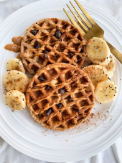

.jpg)
Welcome to my Mini Banana Waffles Recipe Page! Indulge in the delightful taste of mini banana waffles with my easy-to-follow recipe. These bite-sized wonders are perfect for breakfast or as a sweet treat any time of the day. Imagine waking up to the aroma of freshly cooked mini banana waffles wafting through your kitchen - pure bliss!
My recipe combines the sweetness of ripe bananas with the light and fluffy texture of waffles, creating a delectable treat that will satisfy your cravings. Whether you're hosting a brunch with friends or simply craving something delicious, these mini banana waffles are sure to impress.
To make these mini banana waffles, you'll need just a few simple ingredients. Follow my step-by-step instructions to whip up a batch of these mouthwatering waffles in no time.
Once cooked to golden perfection, serve your mini banana waffles warm and topped with your favorite toppings. Whether you prefer classic maple syrup, fresh fruit, or a dollop of whipped cream, the possibilities are endless.So why wait? Dive into the world of mini banana waffles and treat yourself to a culinary delight that's sure to please. Whether you're a waffle enthusiast or a banana lover, these mini banana waffles are a must-try. Get ready to enjoy the perfect blend of flavors and textures in every bite!
Mini Banana Waffles Recipe
Prepare yourself for a delightful culinary experience with our mini banana waffles recipe. These bite-sized wonders are perfect for breakfast or as a sweet treat any time of the day.
Ingredients:
- 1 ripe banana, mashed
- 1 cup all-purpose flour
- 1 tablespoon sugar
- 1 teaspoon baking powder
- 1/2 teaspoon baking soda
- 1/4 teaspoon salt
- 1 egg
- 1 cup milk
- 2 tablespoons melted butter
Instructions:
- In a mixing bowl, combine mashed banana, flour, sugar, baking powder, baking soda, and salt.
- In another bowl, whisk together egg, milk, and melted butter.
- Pour the wet ingredients into the dry ingredients and stir until just combined. Do not overmix.
- Preheat your waffle iron and lightly grease it.
- Pour batter onto the waffle iron and cook according to manufacturer's instructions until golden brown and crispy.
- Serve warm with your favorite toppings such as maple syrup, fresh fruit, sprinkles, chocolate chips or whipped cream.
Enjoy the deliciousness of these mini banana waffles with friends and family!